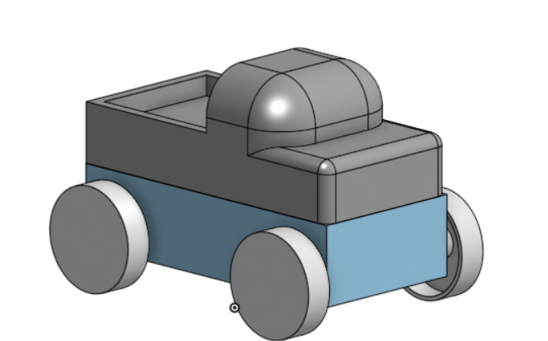

Designed for young users, this toy emphasizes simplicity, durability, and ease of interaction. Large features and smooth geometry make the toy easy to handle, while the modular structure allows parts to be assembled and reconfigured without tools.
The design process included CAD modeling, dimensioned drawings, and prototyping to ensure manufacturability and usability.